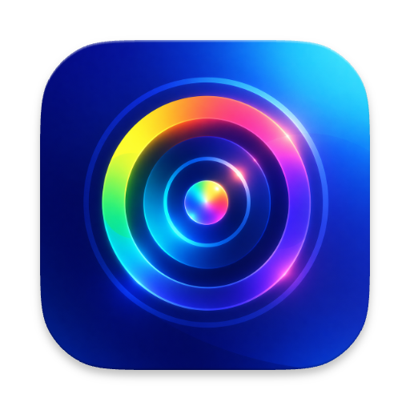
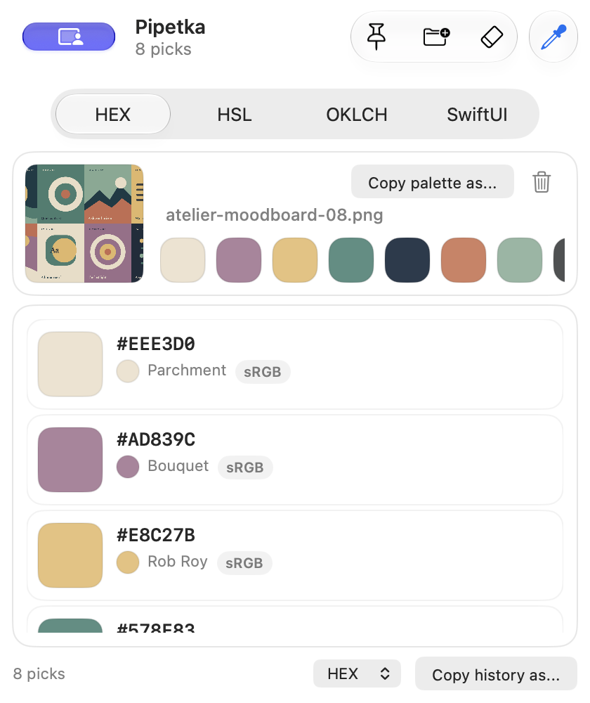
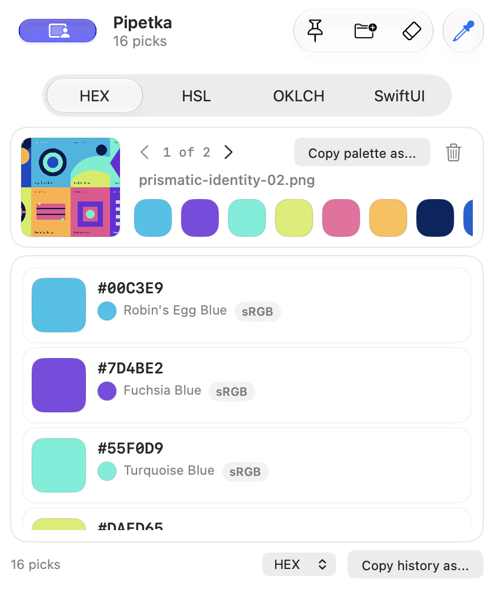

Point at any pixel.
A magnified lens and precise crosshair help you sample the color you actually saw.

Pipetka Buy me a coffeeA native color picker for macOS
Pipetka samples colors from anywhere on your screen, names what you find, and turns image palettes into ready-to-use code.

A few colors, kept together
Pick from the screen, drop in a moodboard, and keep every useful shade within reach. These app screenshots use original fictional artwork and demo colors.
Drop a file or folder. Pipetka finds up to eight dominant colors, then keeps the palette beside your picks.

COPY IN A CLICKColor names, swatches, and recent history sit together in one small native window.
The artwork and color values in these screenshots are fictional demo data created for this page.
A little motion study
Eight mock colors arrive one by one. Watch a loose moodboard turn into a palette you can use.
Small tool, thoughtful details
A magnified lens and precise crosshair help you sample the color you actually saw.
HEX, RGB, HSL, SwiftUI, and CSS color profiles from sRGB to Display P3 and HDR.
Pull out up to eight dominant colors, then export as CSS variables, SCSS, Tailwind, or JSON.
The menu bar keeps recent picks handy when you move between your tools.
A small bridge to your AI tools
Pipetka includes a local MCP server for compatible AI clients. Ask an assistant to open the screen picker or extract a palette from an image, right from a conversation.
Read the MCP setup guideFind the blue in this screenshot and give me the CSS value.
Built for the Mac in front of you
Get Pipetka for macOS 13 and later. Screen Recording permission is requested only when you start the screen picker.